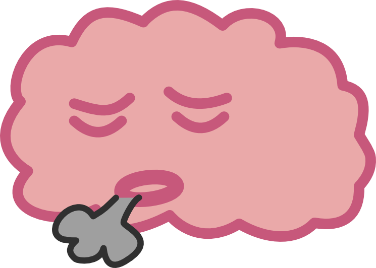
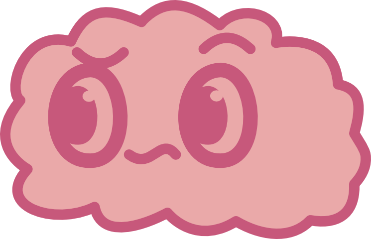

★ CAUTIVERIO VOLUNTARIO ★
Un estudio sobre cómo usamos Instagram Reels.
Quiero participar ↓
01
Soy Santiago Gaete, estudiante de 5º año de Diseño en la Universidad Diego Portales. Este estudio es parte de mi proyecto de título.
Durante 21 días, una app registra cómo usas Instagram Reels. La primera semana solo mira. Después, cuando el contenido llega empujado por el algoritmo, aparecen pausas y avisos. Nunca te bloquea: siempre puedes seguir.
02
Necesitas tu código de participante (por ejemplo, U3), que te envío por mensaje. Al final, si aceptas, el formulario te muestra una clave y el enlace para descargar la app. Anota la clave.
Abrir formulario ↗Descárgala desde el teléfono con el enlace del formulario y sigue la guía de abajo. Android va a mostrar algunas advertencias porque la app no viene de Play Store: es normal.
Descargar la app (.apk)No tienes que abrir la app. A veces, al salir de Instagram, aparecen tres preguntas cortas: responderlas es lo más valioso del estudio.
03

Abre Love Yourself (estudio).
Escribe tu código de participante y la clave que te mostró el formulario, y toca Continuar.
Toca cada fila pendiente de la lista; al volver, aparece marcada con ✓.
¿ACCESIBILIDAD GRIS? Pasa en Android 13 o más nuevo. Ve a Ajustes → Apps → Love Yourself (estudio) → ⋮ (arriba a la derecha) → Permitir ajustes restringidos. Después vuelve a Accesibilidad y actívala.
Elige tus intereses y toca Continuar. La app debería decir "Estudio en curso · Día 1 de 21". Si dice eso, ¡listo!
Algunas marcas "duermen" las apps aunque les hayas quitado el ahorro de batería.
Al terminar, primero exporta y después ya puedes desinstalar. Si quieres retirarte, avísame: borro tus datos y no tienes que dar explicaciones.
04